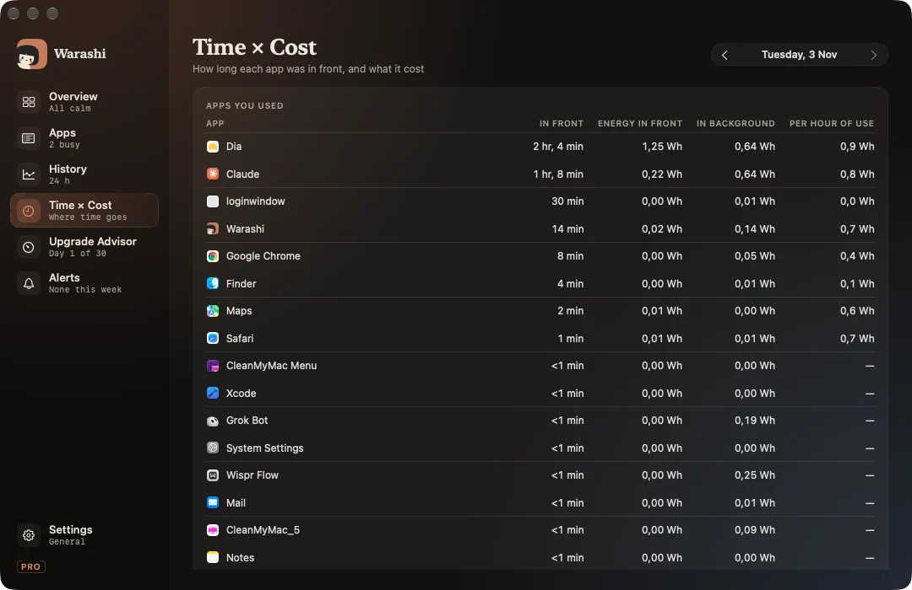

Time × Cost joins two things: how long each app was in front, and what it cost in energy. It answers “what does this app cost me per hour?” and “what drained my battery while I wasn't even using it?”.
Turn it on
It needs activity recording, which is off until you turn it on (in the welcome tour or Settings › Activity). Warashi then notes only which app is in front, nothing else: no window titles, no websites, no keystrokes. You can exclude apps and delete all activity data at any time. A small dot beside the spirit shows while it records.
Reading it
- Apps you used: time in front, energy in front, energy in the background, and energy per hour of use.
- Background drain from apps you didn't open: real apps that used energy without ever coming to the front.
Step through days with the arrows at the top. Energy comes from macOS's own per-process energy counters and is labelled as an estimate.
